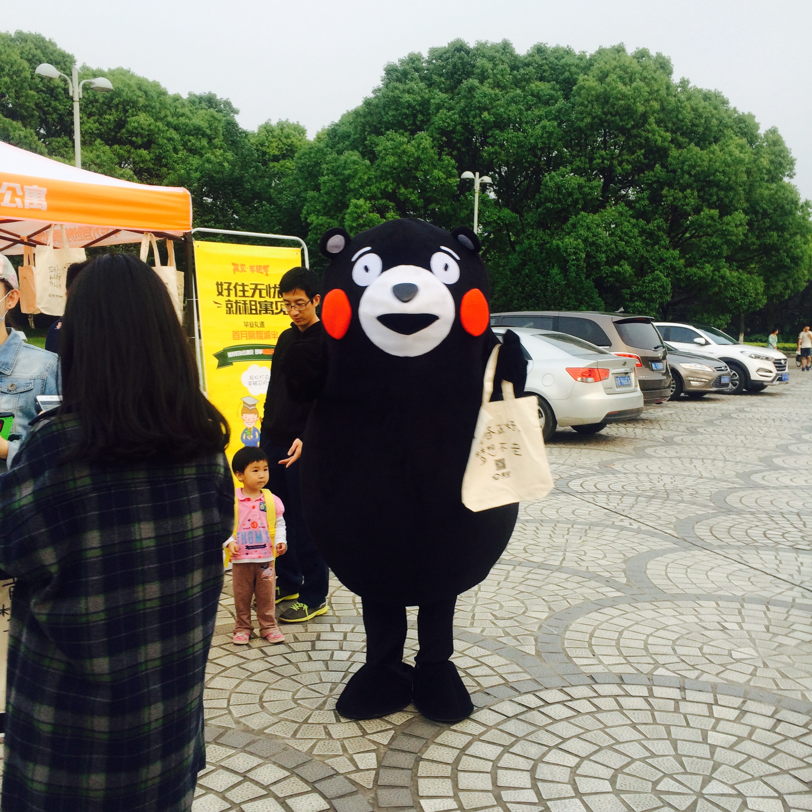

暖暖
梁静茹

[00:00.65]暖暖 - 梁静茹 [00:02.01]词：李焯雄 [00:03.84]曲：人工卫星 [00:25.27]都可以随便的 [00:27.30]你说的我都愿意去 [00:30.08]小火车摆动的旋律 [00:34.53]都可以是真的 [00:36.51]你说的我都会相信 [00:39.34]因为我完全信任你 [00:44.06]细腻的喜欢 [00:46.37]毛毯般的厚重感 [00:48.57]晒过太阳熟悉的安全感 [00:53.35]分享热汤 [00:54.99]我们两支汤匙一个碗 [00:57.84]左心房暖暖的好饱满 [01:02.29]我想说其实你很好 [01:04.82]你自己却不知道 [01:07.66]真心的对我好 [01:09.93]不要求回报 [01:12.27]爱一个人希望他过更好 [01:16.91]打从心里暖暖的 [01:19.16]你比自己更重要 [01:39.18]都可以随便的 [01:41.15]你说的我都愿意去 [01:43.96]回忆里满足的旋律 [01:48.29]都可以是真的 [01:50.40]你说的我都会相信 [01:53.13]因为我完全信任你 [01:57.94]细腻的喜欢 [02:00.14]你手掌的厚实感 [02:02.57]什么困难都觉得有希望 [02:07.10]我哼着歌 [02:08.84]你自然的就接下一段 [02:11.60]我知道暖暖就在胸膛 [02:16.08]我想说其实你很好 [02:18.66]你自己却不知道 [02:21.46]真心的对我好 [02:23.81]不要求回报 [02:26.07]爱一个人希望他过更好 [02:30.77]打从心里暖暖的 [02:33.11]你比自己更重要 [02:39.16]我想说其实你很好 [02:41.71]你自己却不知道 [02:44.51]从来都很低调 [02:46.87]自信心不高 [02:49.14]爱一个人希望他过更好 [02:53.72]打从心里暖暖的 [02:56.21]你比自己更重要 [03:01.14]你不知道 [03:03.10]真心的对我好 [03:05.35]不要求回报 [03:07.62]爱一个人希望他过更好 [03:12.29]打从心里暖暖的 [03:16.97]你比自己更重要 [03:21.49]我也希望变更好 [03:44.68]哒哒哒哒哒哒哒